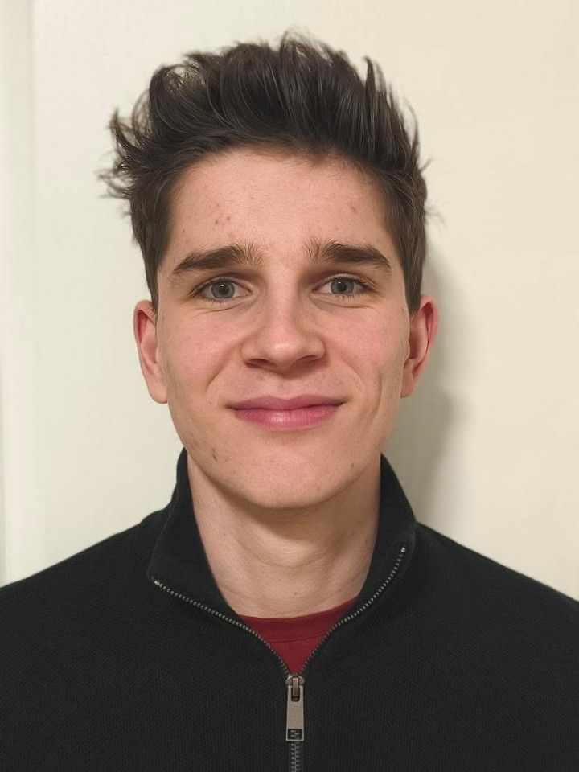

Baccalauréat Technologique STI2D
Spécialité ITEC
Lycée Jacques de Vaucanson, Tours.
Formation technologique orientée vers l'innovation technologique, la conception et l'ingénierie.
À PROPOS DE MOI
Découvrez mon parcours scolaire, mes expériences et ce qui me motive.

QUI SUIS-JE ?
Étudiant en BUT Génie Mécanique et Productique à l'IUT d'Orléans.
J'aime comprendre comment fonctionnent les systèmes mécaniques et transformer une idée en une réalisation concrète.
Au cours de ma formation, j'ai développé des compétences en conception mécanique, modélisation 3D, lecture de plans et fabrication.
Curieux et appliqué, j'accorde de l'importance au travail bien réalisé et à l'apprentissage de nouvelles compétences.
FORMATION
Lycée Jacques de Vaucanson, Tours.
Formation technologique orientée vers l'innovation technologique, la conception et l'ingénierie.
Formation orientée vers la conception et l'amélioration de systèmes mécaniques et de procédés industriels.
Utilisation de logiciels de CAO comme Creo Parametric et SolidWorks.
EXPÉRIENCES
Juin 2021 — Stage d'observation industrielle
Observation de la chaîne de production du vin, de la fermentation jusqu'à la mise en bouteille.
Découverte de différentes étapes industrielles : bouchage, étiquetage et conditionnement.
Avril — Juin 2026
Découverte des méthodes de contrôle non destructif (CND) et de leur application en aéronautique.
Conception d’un banc automatique de démagnétisation, avec modélisation 3D, réalisation de plans et prototypage de pièces mécaniques.
Juillet — Août 2022
Travail en équipe dans le cadre de la castration de maïs à Auzouer-en-Touraine.
Cette expérience m'a permis de développer ma discipline, ma persévérance et ma régularité.
MES QUALITÉS
J'aime comprendre le fonctionnement des choses et découvrir de nouvelles méthodes.
Je porte une attention particulière à la qualité du travail réalisé.
Je cherche constamment à développer mes connaissances et mes compétences.
EN DEHORS DES ÉTUDES